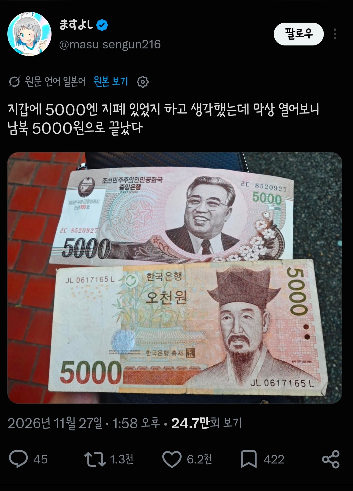
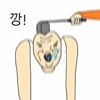
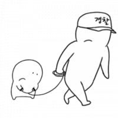

위에껀 어케 얻었지...?

위에껀 어케 얻었지...?
하씨 예전에 택시 기사새끼가 거스름돈 5천원 줘야할거 20위안 지폐 준거 생각나네 시발ㅋㅋㅋ
비슷하긴하네ㅋㅋㅋㅋㅋㅋㅋ
1000원이나 부족함
아니 택시 기사가 불 끄고 거스름돈을 주더라고 ㅋㅋㅋ 진짜 어이가 없었다
엌ㅋㅋㅋㅋㅋ 그정도면 택시기사가 노린거 아니냐
니도 몰랐으니 그만 이해해줘라
명목상 화폐가치는 위의것이 좀더 크네
물론 실질가치는 똥종이보다 못하지만
저거 당근에올리면 비싸게 살거같은데ㅋㅋ
액면가를 넘는 "실질 가치"
가치(돈으로써의 가치가 아님)
북한화폐 중고거래 올리면 국정원에서 너 잡아감
진짜? 중국 가면 국경 근처에서 쉽게 구할거같긴한데 ㅋㅋㅋ
ㅇㅇ 중국 대도시 어느 공항이든 밖에서 담배빨고 있으면 북괴 간부들이 굽신굽신 거리면서 지들 지폐좀 줄테니 위안화 좀 달라고 그지마냥 구걸함
자건 왜 가지고 다니는데 ㅋㅋㅋㅋ
서양쫃은 북한으로 관광가고그러던데
일본은 못가나??
일본인도 북한관광 가능?
과거엔 편도로는 가능했더라
😱ㄷㄷ
편도로는 지금 우리도 가능하긴 해…
들어올 때는 마음대로였겠지만 나갈 때는 아니란다
위에꺼는 중국 통해서 은근 수집용으로 나돌아다님 ㅋㅋ
실제 가치에 비해 수집용 가치가 개 뻥튀기 되기도 하니까 나같아도 수집용으로 팔아먹을듯 ㅋㅋ
임진각 기념품가게 가니까 팔던거 같던데

저건 어케 구한겨 ㅋㅋㅋ
중국가면 그냥 기념품 가게에서 팔아 ㅋㅋㅋㅋ
